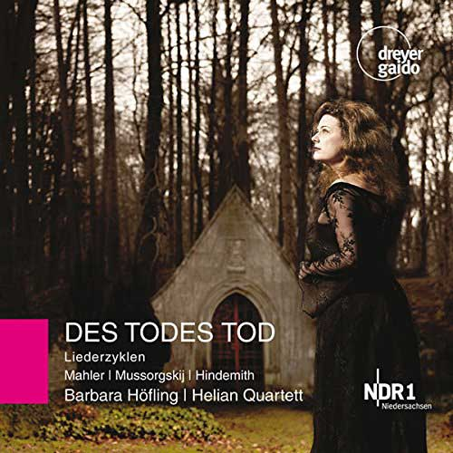
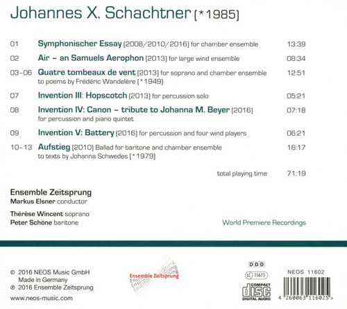

WATCH AND LISTEN

×


DES TODES TOD
Werke von Gustav Mahler, Modest Mussorgsky und Paul Hindemith
Barbara Höfling, Sopran
Helios Quartett
Sophie Lücke, Kontrabass
2014, Hannover
Get on Amazon.de
×


Johannes X. Schachtner
Works For Ensemble
Markus Elsner, Dirigent
Thérèse Wincent, Soprano
Peter Schöne, Baritone
Ensemble Zeitsprung
2016, München
Get on Amazon.deIn Memory of my great Teacher
Rinat Ibragimov
(1960-2020)
Thankful for ever.
Schubert Sonata in A minor, 2nd movement
Sophie Lücke - double bass
Tomoko Nishikawa - piano